뚝딱
뚝딱 사용설명서
학원 블로그 글을 주제 한 줄로 만들어 네이버 블로그에 올리기까지의 과정을 순서대로 안내합니다.
김
이 설명서의 예시 사용자
김하늘 원장 · 하늘수학학원 대치점
중·고등 수학 학원을 운영합니다. 블로그를 꾸준히 올리고 싶지만 글 쓸 시간이 부족합니다. 오늘 처음 뚝딱에 가입해 "고1 수학 내신 대비 오답 노트 정리법" 글을 네이버 블로그에 올리려고 합니다.
전체 흐름
화면의 빨간 상자는 그 단계에서 누를 버튼입니다.
01
회원가입
계정을 만들면 무료 체험으로 글 2편을 바로 만들 수 있습니다.
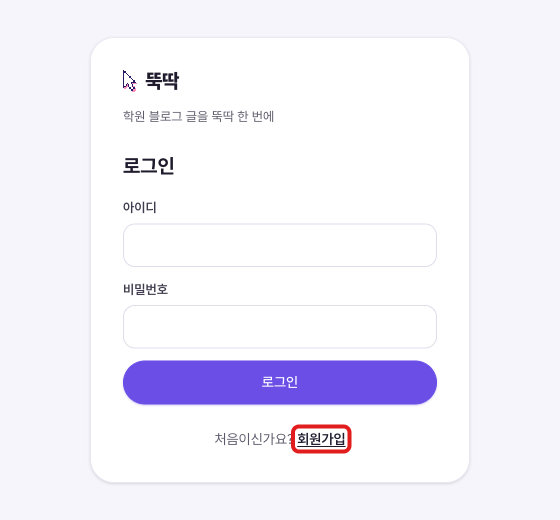
- 뚝딱에 접속하면 로그인 화면이 나옵니다. 처음이라면 아래의 회원가입을 누릅니다.
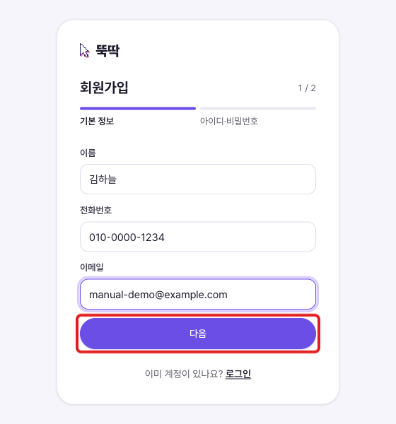
- 이름, 전화번호, 이메일을 입력합니다. 전화번호는 숫자만 치면 하이픈(-)이 자동으로 들어갑니다.
- 다음을 누릅니다.
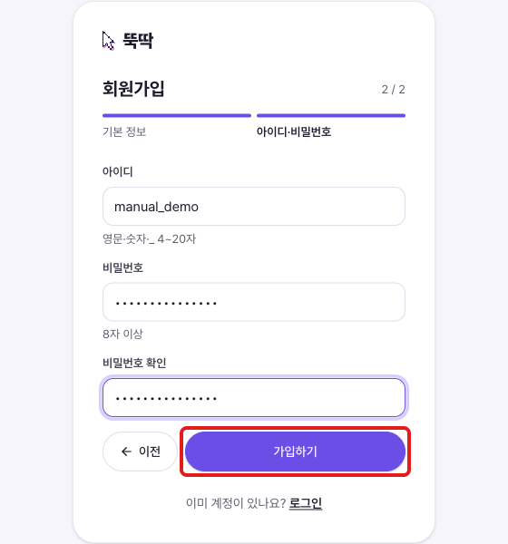
- 아이디(영문 소문자·숫자·_ 4~20자)와 비밀번호(8자 이상)를 입력하고, 비밀번호를 한 번 더 입력합니다.
- 가입하기를 누릅니다.
가입이 끝나면 자동으로 로그인되어 02 학원 정보 등록 화면으로 이동합니다.
02
학원 정보 등록
처음 한 번만 입력합니다. 여기 입력한 내용이 모든 글과 이미지에 쓰입니다.

- 학원 유형을 고릅니다. 김하늘 원장은 수학학원을 선택했습니다.
- 학원명(필수)과 지점명을 입력합니다.
- 주소 검색을 눌러 학원 주소를 찾고, 층·호수를 입력합니다.
- 대표 전화를 입력합니다. 홈페이지가 있으면 주소를 넣어 두세요. 학원 정보를 자동으로 찾아 줍니다.

- ▶ 자세한 정보를 열면 학원 소개, 특징, 강사진, 교육 과정, 주요 타깃, 기본 문체, 금지 표현을 입력할 수 있습니다.
- 입력할수록 글이 학원에 맞게 정확해집니다. 특징은 적은 그대로만 글에 쓰이므로 사실인 내용만 적습니다.
- 기존 블로그 글을 올리면 학원의 문체를 분석해 그대로 따라 씁니다.
- 다 입력했으면 화면 오른쪽 아래의 완료하고 시작하기를 누릅니다.
저장이 끝나면 03 주제 입력 화면으로 이동합니다. 학원 정보는 나중에 09 블로그 설정에서 고칠 수 있습니다.
03
주제 입력
쓸 글의 주제를 한 줄로 적습니다.
왼쪽 메뉴 › 새 콘텐츠 작성
- 어떤 글을 쓸까요? 칸에 주제를 적습니다. 아래 예시 주제를 눌러도 됩니다. 김하늘 원장은 "고1 수학 내신 대비 오답 노트 정리법"을 입력했습니다.
- 콘텐츠 유형을 고릅니다(개념 정리, 내신 대비, 학부모 가이드, 학원 소식 등).
- 이미지 함께 만들기를 켜 두면 썸네일을 포함해 이미지 2~5장이 함께 만들어집니다.
- 글 생성을 누릅니다.
오른쪽 위의 무료 체험 2회 남음은 남은 생성 횟수입니다. 생성권을 사면 생성권 N개 남음으로 바뀝니다.
04
글 생성
AI가 주제를 분석해 글과 이미지를 만듭니다. 보통 1~3분 걸립니다.

- 주제 분석 → 콘텐츠 기획 → 본문 작성·다듬기 → 이미지 구성 순서로 진행 상태가 표시됩니다.
- 생성 중에는 이 화면을 벗어나지 마세요.
생성이 끝나면 자동으로 05 내용 확인·수정 화면이 열립니다. 생성에 실패하면 차감된 횟수는 자동으로 돌아옵니다.
05
내용 확인·수정
만들어진 글과 이미지를 확인하고 필요한 부분을 고칩니다. 고친 내용은 자동으로 저장됩니다.
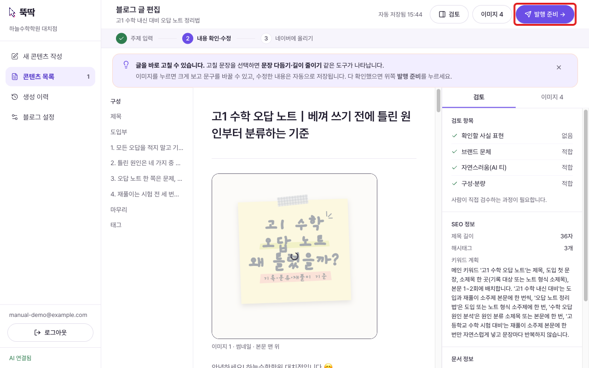
| 왼쪽 · 구성 | 제목, 도입부, 소제목, 마무리, 태그 목록입니다. 누르면 그 위치로 이동합니다. |
|---|---|
| 가운데 · 본문 | 글 본문입니다. 바로 클릭해 고칠 수 있습니다. |
| 오른쪽 · 검토 | 사실 확인이 필요한 표현, 학원 문체, 자연스러움, 구성·분량을 자동으로 점검한 결과와 SEO 정보입니다. |
문장 고치기
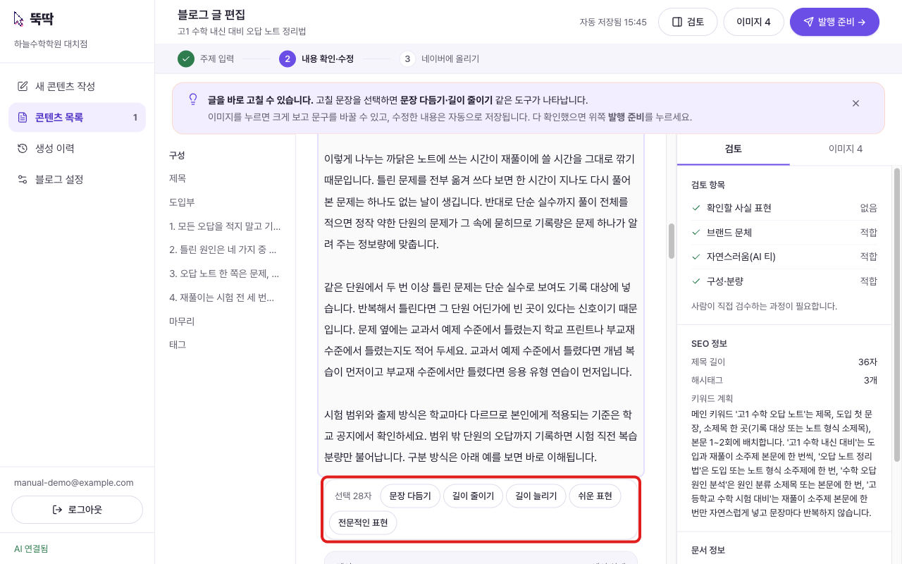
- 고칠 문장을 마우스로 드래그해 선택합니다.
- 본문 아래에 나타나는 도구에서 원하는 기능을 누릅니다: 문장 다듬기 · 길이 줄이기 · 길이 늘리기 · 쉬운 표현 · 전문적인 표현.
이미지 관리
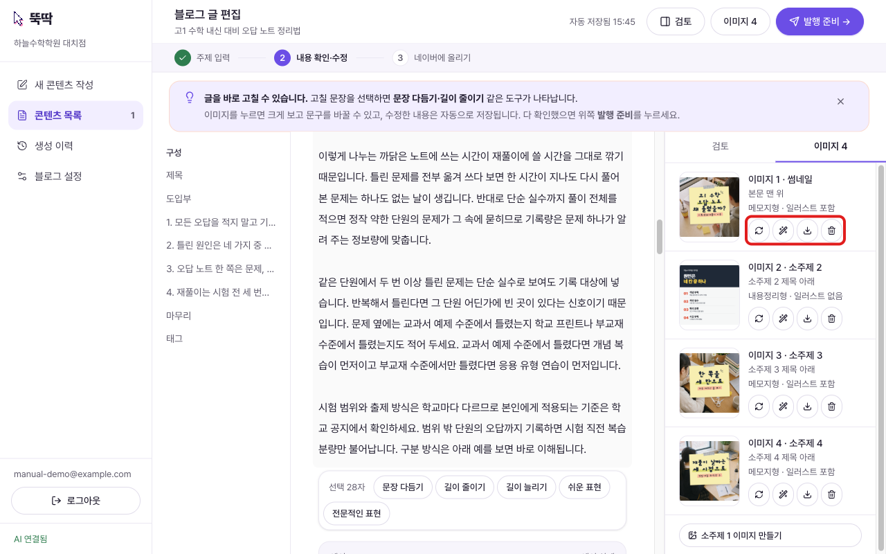
- 위쪽 이미지 N 버튼이나 오른쪽 패널의 이미지 탭을 누르면 글에 들어갈 이미지 목록이 나옵니다.
- 각 이미지 아래 아이콘으로 문구 다시 만들기 · 일러스트 생성 · 다운로드 · 삭제를 할 수 있습니다.
- 이미지가 없는 소제목에는 이미지 만들기로 새 이미지를 추가합니다.
확인이 끝났으면 오른쪽 위의 발행 준비 →를 누릅니다. 06 네이버에 올리기 화면으로 이동합니다.
06
네이버에 올리기
오른쪽 안내 순서대로 복사해 네이버 블로그 글쓰기에 붙여넣습니다.

- 네이버 글쓰기 열기를 누르면 새 탭에 네이버 블로그 글쓰기 화면이 열립니다. 네이버 로그인이 필요할 수 있습니다.
- 제목 복사를 누르고 네이버 글쓰기의 제목 칸에 붙여넣습니다.
- 본문 복사 (서식 포함)를 누르고 네이버 본문 칸을 한 번 클릭한 뒤 붙여넣습니다. 글자 크기·정렬·소제목 서식이 함께 들어갑니다.
왼쪽 미리보기는 네이버에 붙여넣었을 때의 모습입니다. [이미지 1 · 썸네일] 같은 표시는 이미지를 넣을 자리입니다.
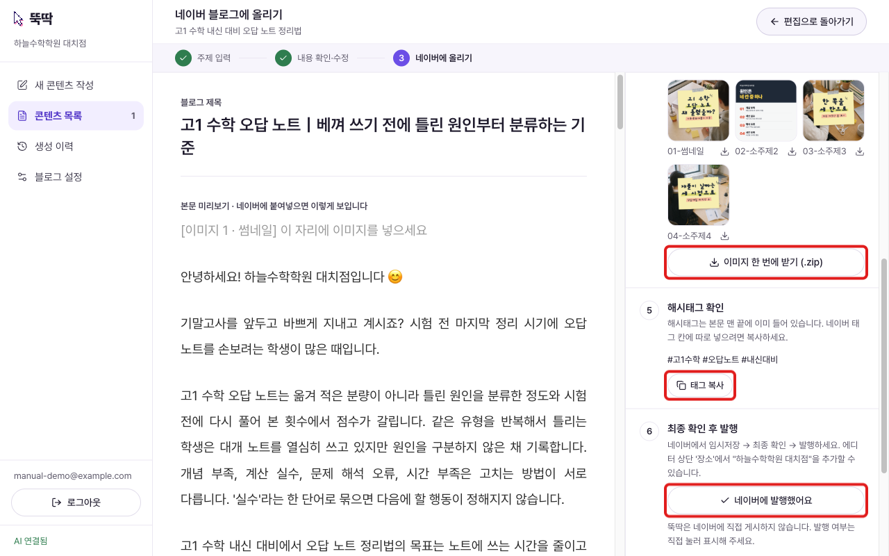
- 이미지 한 번에 받기 (.zip)로 이미지를 내려받습니다. 본문의 [이미지 N] 표시 자리에 같은 번호의 이미지를 올리고 표시 문구는 지웁니다.
- 해시태그는 본문 끝에 이미 들어 있습니다. 네이버 태그 칸에 따로 넣으려면 태그 복사를 누릅니다.
- 네이버에서 발행을 마친 뒤 네이버에 발행했어요를 누르면 목록에 발행 완료로 표시됩니다.
뚝딱은 네이버에 글을 직접 올리지 않습니다. 발행은 원장님이 네이버에서 직접 하고, 발행 여부만 뚝딱에 표시합니다.
07
콘텐츠 목록
지금까지 만든 글을 모아 봅니다.
왼쪽 메뉴 › 콘텐츠 목록
- 글마다 제목, 상태(작성 중·발행 완료), 유형, 작성 시각이 보입니다.
- 편집을 누르면 05 내용 확인·수정 화면으로, 발행 준비를 누르면 06 네이버에 올리기 화면으로 이동합니다.
08
생성 이력
글을 생성한 기록을 시간순으로 봅니다.
왼쪽 메뉴 › 생성 이력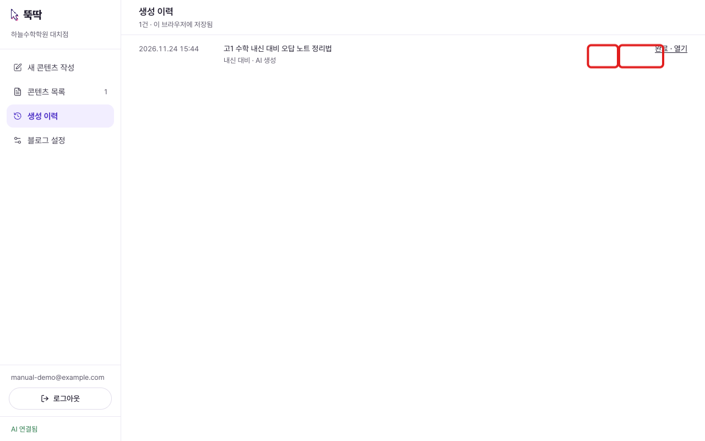
- 생성 시각, 입력한 주제, 유형이 표시됩니다. 완료 · 열기를 누르면 해당 글이 열립니다.
- 생성 이력은 지금 쓰는 브라우저에 저장됩니다. 다른 컴퓨터에서는 콘텐츠 목록을 이용하세요.
09
블로그 설정
모든 글에 공통으로 적용되는 서식, 이미지 디자인, 고정 문구를 정합니다. 바꾸면 바로 저장됩니다.
왼쪽 메뉴 › 블로그 설정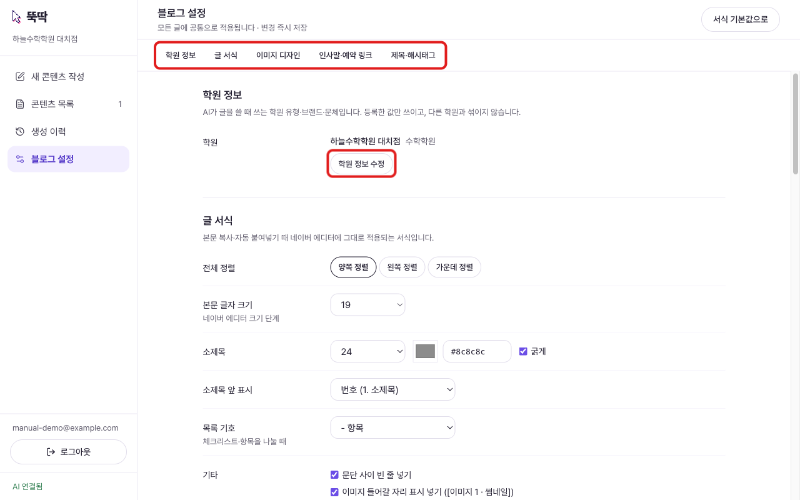
- 위쪽 탭(학원 정보 · 글 서식 · 이미지 디자인 · 인사말·예약 링크 · 제목·해시태그)을 누르면 해당 항목으로 이동합니다.
- 학원 정보 수정을 누르면 02 학원 정보 등록 화면이 열려 내용을 고칠 수 있습니다.
- 글 서식에서 정렬, 본문·소제목 글자 크기, 소제목 앞 표시, 목록 기호를 정합니다. 네이버에 붙여넣을 때 그대로 적용됩니다.
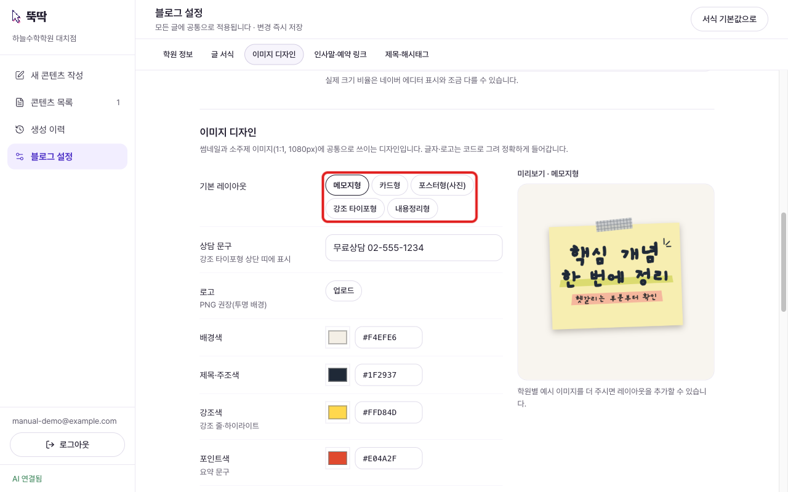
- 기본 레이아웃을 고릅니다: 메모지형 · 카드형 · 포스터형(사진) · 강조 타이포형 · 내용정리형. 오른쪽에서 미리보기를 확인합니다.
- 상담 문구, 로고, 배경색·주조색·강조색·포인트색, 일러스트 그림체를 학원에 맞게 정합니다.
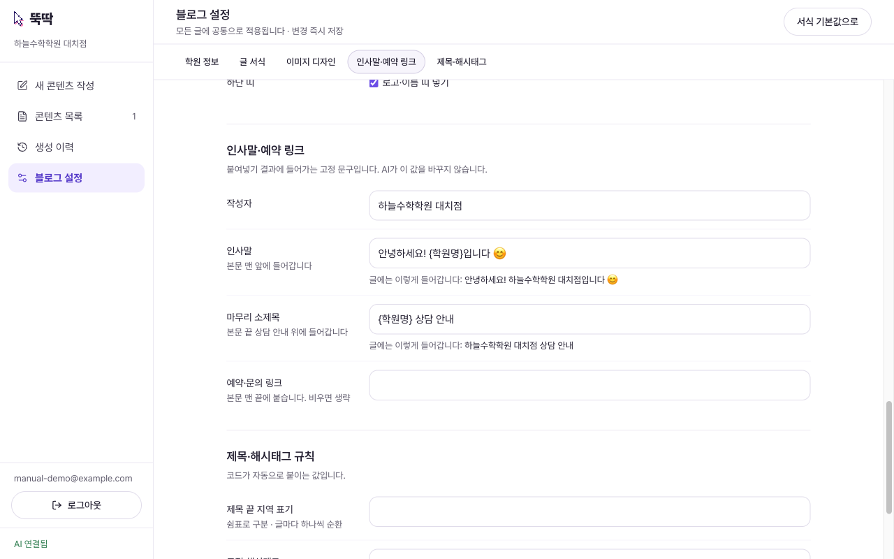
- 인사말은 본문 맨 앞에, 마무리 소제목은 상담 안내 위에 들어갑니다. {학원명}은 학원 이름으로 바뀝니다.
- 예약·문의 링크를 넣으면 본문 맨 끝에 붙습니다.
- 제목·해시태그 규칙에서 제목 끝 지역 표기, 고정 해시태그, 지역 해시태그 묶음을 정합니다.
10
생성권 구매
무료 체험 2회를 모두 쓰면 생성권을 구매해 계속 쓸 수 있습니다.
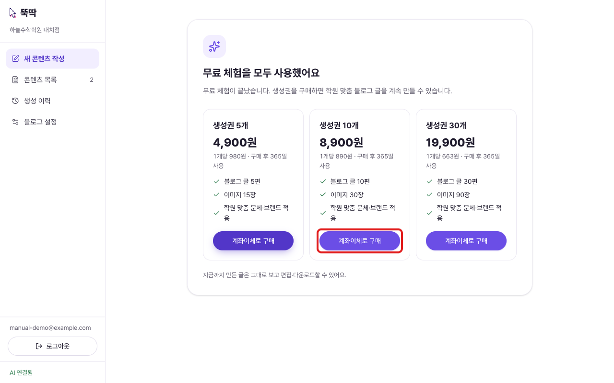
| 생성권 5개 · 4,900원 | 블로그 글 5편 · 이미지 15장 |
|---|---|
| 생성권 10개 · 8,900원 | 블로그 글 10편 · 이미지 30장 |
| 생성권 30개 · 19,900원 | 블로그 글 30편 · 이미지 90장 |
- 원하는 생성권의 계좌이체로 구매를 누릅니다. 생성권은 구매 후 365일 동안 쓸 수 있습니다.

- 입금하실 분의 이름을 입력합니다. 이체할 때 받는 통장에 찍히는 이름과 똑같아야 자동으로 확인됩니다.
- 입금 계좌 확인하기를 누릅니다.

- 복사로 계좌번호를 복사해 표시된 금액 그대로 입금합니다.
- 입금이 확인되면 이 화면이 자동으로 바뀌고 생성권이 충전됩니다. 입금 기한이 지나면 주문은 만료됩니다.
- 확인이 오래 걸리면 운영자가 입금을 직접 확인해 충전합니다. 나중에 하기를 눌러 화면을 닫아도 됩니다.
충전이 끝나면 03 주제 입력으로 돌아가 이어서 글을 만듭니다.
11
다시 로그인
다음에 접속할 때는 아이디와 비밀번호로 로그인합니다.
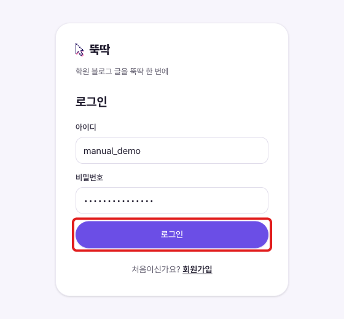
- 가입할 때 정한 아이디와 비밀번호를 입력합니다.
- 로그인을 누르면 03 주제 입력 화면으로 바로 이동합니다.
- 사용을 마치면 왼쪽 메뉴 아래의 로그아웃을 누릅니다.